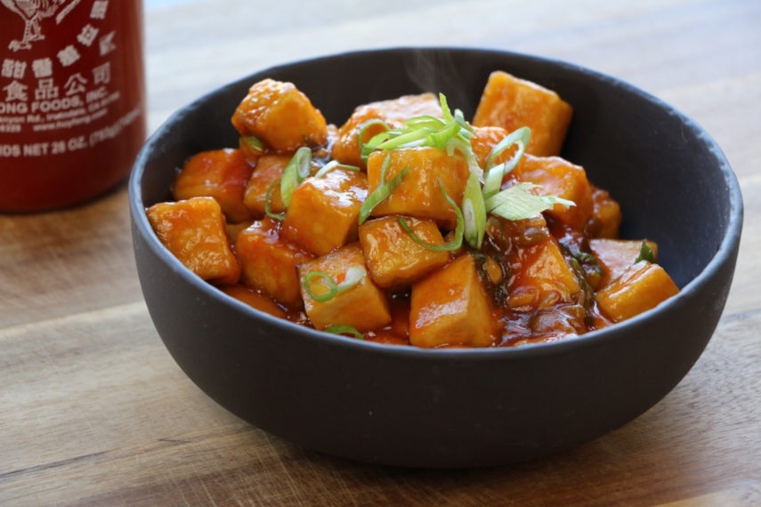

Tofu général Tao

Ingrédients
- 1 bloc de tofu (450 g)
- 1/4 de tasse de fécule de maïs
- 3 c. à table d'huile végétale
- 2 gousses d'ail hachées
- 1 c. à soupe de gingembre haché
- 2 c. à soupe de sirop d'érable
- 2 c. à soupe de sauce soya
- 2 c. à soupe de ketchup
- 1 c. à thé de sauce sriracha (ou de pâte de piment)
- 3 oignons verts émincés
- 3/4 de tasse de bouillon de légumes
- Huile
Étapes
- Couper le tofu en dés et bien l'enrober de fécule de maïs.
- Dans une casserole faire chauffer l'huile. Ajouter les cubes de tofu et les faire revenir jusqu'à ce qu'ils soient bien dorés et croustillants. Ajouter de l'huile si nécessaire.
- Incorporer l'ail, le gingembre, le sirop d'érable, la sauce soya, le ketchup, la sauce sriracha, les oignons verts et le bouillon de légumes.
- Laisser réduire quelques minutes et servir.